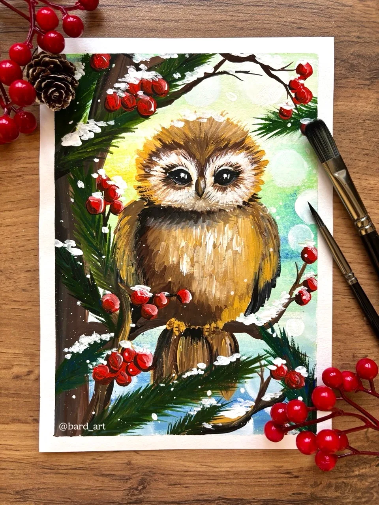
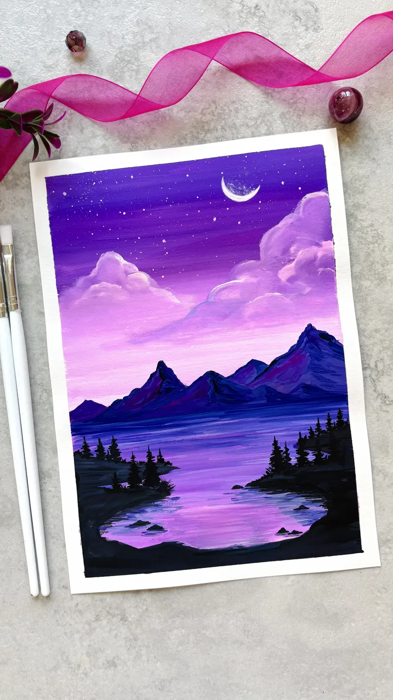
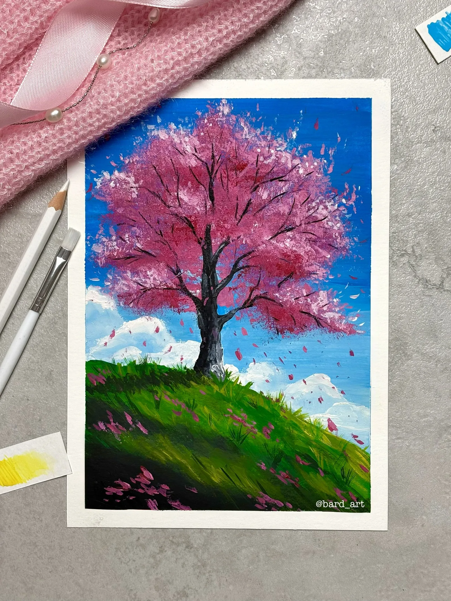
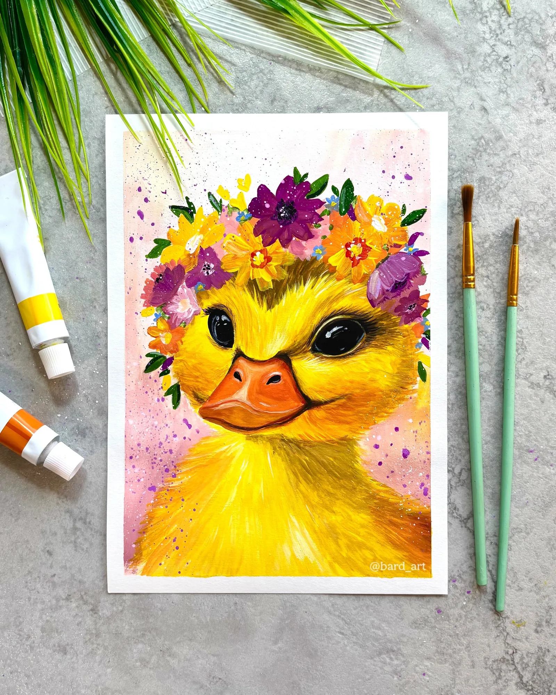
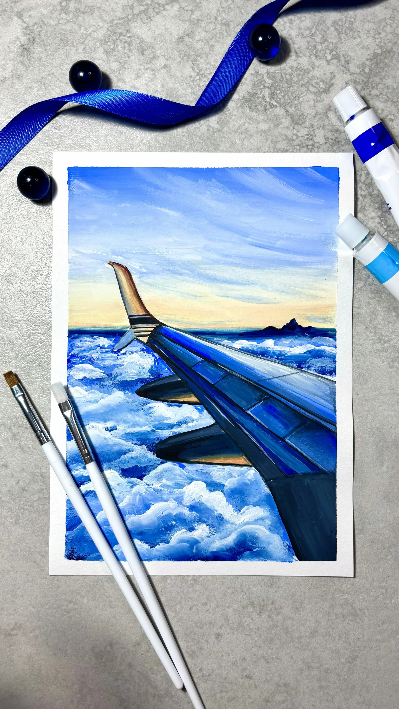
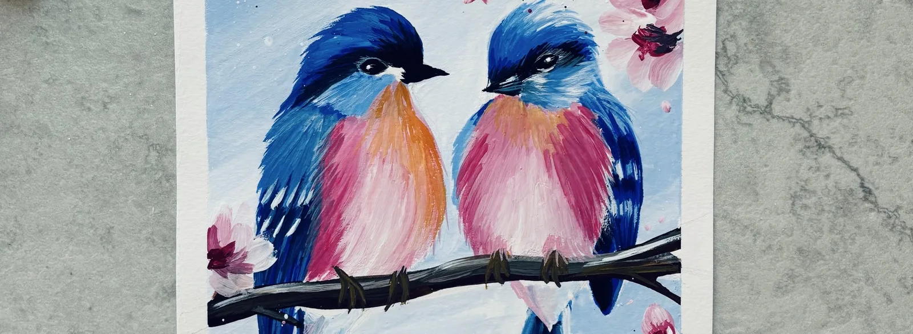

Творческая мастерская





Осваиваем композицию, перспективу, объем и светотень. Учимся наблюдательности — замечать скрытые детали вокруг и легко переносить образы из воображения на бумагу.
Я педагог дополнительного образования с опытом работы в сфере творчества более 5 лет. Приглашаю на увлекательные занятия по рисованию.
"Ваш путь от первых линий к уверенному рисунку и радости от каждой работы"
Онлайн-уроки и мастер-классы по написанию картин с нуля. Уверенное владение классическими инструментами и различными техниками.
Авторские картины под ваш интерьер, росписи и оформление коммерческих пространств по вашим пожеланиям и эскизам.

Здесь мы не просто учимся держать кисть, мы учимся видеть красоту вокруг и воплощать свои фантазии на бумаге.